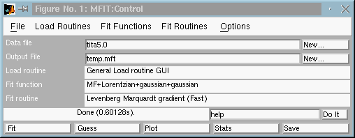
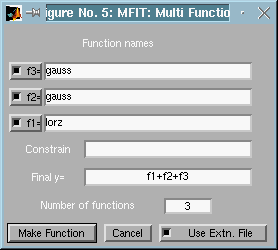
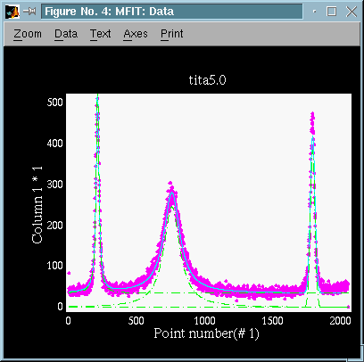
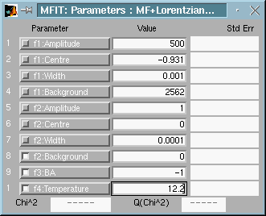
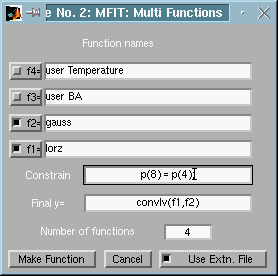

Version 4.2. (1999)

Fig 2 : Mfit : The Control window for loading the example
file
Enter '3' in the 'Number of functions' field, and then click on 'Make function' button There are now 3 lines fn= to describe the multifunction, one for each peak..
To precise the nature of each sub-function, you need to enter
the matlab name of the fit function (the one wich has an
extension .m).
For instance, the Lorentzian function is described in the lorz.m
matlab file, and the Gaussian corresponds to the file gauss.m.
The names of all availables Mfit fit functions are given
in the funcs directory (see installation).
You can also get them by typing at matlab prompt (see generated function
list
below):
>> help funcsThen you need to assemble sub-functions as a matlab expression (in Final y=). In the following example, we just add them.
Finally, the Multifunction window looks like:

Fig 2 : Mfit : The multifunction description, composed
of 2 Lorentzians, and a Gaussian.
 Re-create the multifunction
by clicking on 'Make function' button. This has to be done each
time you change the function number or a function name. An other possibility
is to re-select 'Multifunctions...' in the Fit Functions
menu.
Re-create the multifunction
by clicking on 'Make function' button. This has to be done each
time you change the function number or a function name. An other possibility
is to re-select 'Multifunctions...' in the Fit Functions
menu.

Fig 3 : Mfit : Parameter window for a multifunction.
Background is only free in one function..

Fig 4 : Mfit : The data window, with multifunction and
separate contributions.

Fig 5 : Mfit : A more advanced multifunction usage using
parameter variable 'p', and 2 user variables.
If you unselect the 'fn=' butons, the separate sub-functions will not be drawn.
It is possible not to use a function name for fields fn=. Names that are not function names, are evaluated in the following order:For instance, if you used a variabl;e 'a' in matlab workspace, you can type:
- first as global matlab variables
- as base workspace variables (not global)
- then as matlab expressions using Mfit internal variables in 'Multi Functions' window:
'fn=a;'.or 'fn=log(a);'.
It is possible to use in multifunctions some additional parameter that are not related to any fit function. For instance it could be a temperature that you measured during an experiment, or a laser power, etc...
This is usefull if you want to gather all informations about a data file in the same MFit parameter file (see Saving results). Then you can plot a parameter versus an other, including your private user parameters (see Mfit parameter file importation).To do so, use lines like:
fn=user my_parameterIt will appear as a one parameter function. You may fix it, in order not to affect the fitting process. Of course, you can also use it in the 'Final y=' expression.
In the 'Final y=' expression, you may use very complex expression, such as 1D convolutions:
Final y= convlv(f1,(f2-min(f2))./norm(f2))This convolution procedure is provided in the funcs directory.
Any matlab expression is possible.: for convolutions, it is highly recommanded that the 'f2' signal be centered (around x=0), with no background ( f2 = f2 - min(f2) ), and possibly normalized ( f2 = f2 ./norm(f2) ). The previous example normalizes and substracts the background.
The Constrain field is evaluated just before the sub-functions. You can modify the parameters according to your own criteria. Parameters are denoted 'p', and you can also use variable 'x', as these are passed to any fit function.For instance
Constrain p(3) = p(4);will force parameter 3. You'd better fix it in the Parameter Window in that case.
When unselecting the 'Use External File' button, you ask the multifunction description to be stored into memory. The access is then slower, as a matlab precompilation is not possible. On the other hand, when this button is selected, matlab stores the multifunction into a file. You can even copy (rename it) and install it in the Fit Functions menu, with the Browse... item.
user : user defined constant for Multifunc
multifunc : Multi Function handler window
triangl : Triangular
cusp : Power law cusp.
dho : Damped harmonic oscillator
bose : bose factor
green : Green function
ellipse : Ellipse
gauss : Gaussian
gauss2 : Gaussian Squared
gaussx2 : 2 gaussians
lorgss : Lorentzian + gaussian
lorz : Lorentzian
lorz2 : Lorentzian squared
lorzx2 : 2 lorentzians
gaussn : Gaussian Power n
ngauss : N gaussians
nlorz : N lorentzians
polynomial: polynomial
pow : Power law y=0 x>x0
pow1 : Power law y=0 x<x0
quadrat : quadratic
sgauss : Gaussian plus a sloping background
strline : slope/line
refl : reflectivity function
voigt : Voigt
lorzn : Lorentzian Power n
sdk : 2 Airy functions product power 3 for SDK
airyfp : Airy function for Fabry Perot
rescon : 3D resolution convolution of Lorentzian+Lorentzian squared
background: constant
dirac : Dirac peak
couplph : Phonon coupled with pseudo spin system.
constant : constant